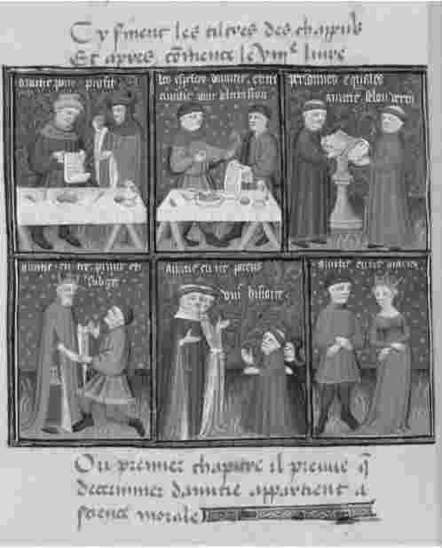

前面几章都是关于理论学科的。亚里士多德本人把大部分时间都花在这个庞大的知识分支上，但他并没有忽视实践学科。事实上，在他最有名的专题论著中，《政治学》和《尼各马可伦理学》都属于实践哲学分支。这些著作不是手册、指南那种意义上的实践指导。相反，书中充满了分析和论证，并且它们都建立在大量的历史和科学研究之上。它们都是实践哲学著作，说它们是实践哲学是因为它们的目的或目标不仅仅是传播真理，而且还要影响行动：“本专题论文不像其他论文那样为了理解而进行研究——我们现在进行的研究不是为了认识何为善，而是为了变成一个好人。”
亚里士多德写了两部伦理学：《尼各马可伦理学》和《欧德谟伦理学》。“伦理学”这一标题容易引起误解，亚里士多德实践哲学中两个关键术语被翻译成标准英语时也容易让人产生误解——“aretê”通常被翻译成“美德”，“eudaimonia”则常被翻译成“幸福”。有必要对这些词简单地说一说。
亚里士多德本人用“êthika”做这些专题论著的标题，这个希腊语单词被音译成英语“伦理学”，于是我们就有了“伦理学”的标题。但是，这个希腊语单词实际的意思是“与性格有关的问题”，更好的标题翻译应为“论性格问题”。至于“aretê”，该词的意思近似“优良”或“优点”：亚里士多德能用该词谈论一个人，也可谈论一个论点或一把斧头。谈论人时就表示人的优点：它表示使一个人成为好人的东西；它与我们所说的美德只有一种间接的联系。最后一点，“eudaimonia”不是英语单词“幸福”所表示的那种精神愉快状态，而是指兴旺、成功地生活，因此，eudaimonia和幸福之间的联系又是间接的。
那么，亚里士多德的“伦理”哲学又是什么呢？“毫无疑问，说eudaimonia是最好的不会有争议，但是我们需要更清楚地表明它到底是什么。”我们每个人都想兴旺发达或都想表现良好，我们所有的行为，只要是合理的，都指向那个终极目标。于是，实践哲学的基本问题就可以这样表述：我们如何取得eudaimonia？兴旺发达表现在哪些方面？怎样才算一个成功的人？亚里士多德不是在问什么能使我们幸福，他也不关注我们应该如何生活这样的问题——如果该问题被视为道德问题。他想指导我们如何在生活中获得成功。
他的答案建立在对eudaimonia本质的哲学分析上。他声称，eudaimonia是“与优秀相一致的一种心灵活动”。说eudaimonia是一种“活动”就等于说兴旺发达包含做事情的意思，而不是指某种静止状态。（幸福状态——比如在爱恋中——是一种思想状态：兴旺发达不是一种状态，而是一种活动或者一组活动。）说eudaimonia关乎灵魂或者生气给予者，就等于说人的兴旺发达要求运用某些天赋，正是这些天赋标示了生命；尤其不能说一个人作为一个人的状态而兴旺发达，除非他明显地在运用人的天赋。最后一点，eudaimonia是一种“与优秀相一致”的活动。兴旺发达就是把某些事情做得很出色、很好。一个人运用了他的天赋，但没有有效地运用或用得很糟糕，就不能算取得了成功。
那么，为取得成功而在行动时要做到的优秀又指的是什么呢？亚里士多德区分了性格上的优秀和智力上的优秀。前者既包括我们所说的道德优点——勇气、慷慨、公正等，又包括适当的自尊、适度的夸耀和风趣幽默等性情。后者包括诸如知识、良好的判断力、“实践性智慧”等。此外，亚里士多德还花了一些时间讨论友谊的准优秀品质。
人区别于动物在于他拥有理性和思维的能力。人身上“包含有神圣的东西——我们称之为智力的东西是神圣的”，并且我们的智力是“内在于我们的神圣的东西”。事实上，“我们每个人都是有智力的人，因为这是我们至高无上的、最好的元素”。因此，最切合人的优秀就是智力上的优秀，而且eudaimonia主要存在于与这些优秀相一致的活动中——它是智力活动的一种形式。“因此，对自然善——比如身体健康、财富、朋友或其他善——的任何选择或拥有，只要能最佳地引发神灵般的思考（也就是说，用我们的智力，内在于我们的神进行思考），就是最好的，就是最完美的标准；而任何不管是因为不足还是过剩、阻碍我们体内神的培养或阻碍我们思考的选择或拥有，就是不好的。”要兴旺发达，要取得成功，就需要进行智力上的追求。亚里士多德认为这样的追求给人以无限的乐趣，智力生活给人提供了无与伦比的幸福；不过，他在《伦理学》中的主要论点不是幸福存在于智力活动，而是卓越的智力活动构成了人的成功或兴旺发达。历史上的智慧大师们也许不是幸福的人，但他们却都是成功的人：他们都兴旺发达，并达到了eudaimonia。

图20“人类不是一个个孤立的个体，人类的优点不能由遁世者来践行。”《尼各马可伦理学》花了很大篇幅讨论友谊和友谊的类型——这幅中世纪的图画阐释了友谊的类型。
光有智力活动还是不够的。人类不是一个个孤立的个体，人类的优点不能由遁世者来践行。亚里士多德认为，“人从本质上来说是政治动物”。这样的评论不是因果关系的格言，而是生物学理论的一部分。“政治动物是指整个群体中的所有个体会共同参与某种活动的动物（这对所有群居动物而言并非都正确）；这样的动物包括人类、蜜蜂、黄蜂、蚂蚁、鹤。”“与其他动物相比，人的特别之处在于他们能单独地认识到好与坏、公正与不公正，等等——并且，正是在这些方面进行合作才能建立家庭和国家。”社会和国家不是强加到自然人身上的人工装饰品：它们是人类本性的表现形式。
社会以不同的形式出现。在亚里士多德的国家概念中第一点要强调的是国家的规模。“一个国家不可能只由十个人组成——并且由十万人组成的也不是一个国家。”希腊城邦的历史构成亚里士多德政治理论的现实背景，而希腊城邦大多数都是侏儒国家。它们常常受到派系斗争而分裂，它们的独立最后随着马其顿帝国的崛起而毁灭。亚里士多德很熟悉派系斗争的祸害（《政治学》第五卷就对国内斗争的原因进行了分析），而且他与马其顿宫廷的关系很密切；不过他从未放弃一个观点，即小城邦是合适的——自然的——公民社会形式。
一个国家就是一个公民集合体；在亚里士多德看来，“没有什么比承担司法和政治职责更能界定”一个公民。一个国家的事务直接由它的公民来管理。每个公民都是这个国家的议会或协商机构的一员，他有资格担当国家的不同职务，包括金融和军事上的委任；他也是司法机构的一分子（因为在希腊法律实践中，法官和陪审团的功能没有区分开）。
一个公民的政治权力有多大，这要根据他所在国家的政体类型来确定，不同的政体授予不同的人或机构立法和确定公共政策的权力。亚里士多德对政体进行了复杂的分类，三大类型分别是君主制、贵族制和民主制。在某些情况下，他偏爱君主制：“当整个家庭或一个人非常出众、他的优点超过其他所有人时，这个家庭或这个人就应成为国王，对所有问题都有至高无上的权力。”但是，这样的情况是极少的或者说是不存在的，因而在实践中亚里士多德更喜欢民主制：“主张大众而非少数精英进行统治的观点……似乎是对的。尽管并非每个人都是精英，然而当他们合在一起就可能会做得更好——不是作为个体，而是集体行动；这就好比费用共摊的聚餐要比一个人掏腰包的宴请更好。”
一个国家，不管实行何种政体，都必须是自足的，并且必须达到国家为之而存在的目标或目的。
“良善生活”是国家的目标，与作为个人目标的eudaimonia是一回事。国家是自然实体，像其他自然事物一样具有目标或目的。目的论既是亚里士多德生物学的一个特征，又是亚里士多德政治理论的一个特征。
国家目标这个概念与另一个崇高的理念相关联。“民主政体的一个根本原则就是自由。自由的一种形式就是依次轮流进行统治和被统治。另一种形式就是过自己想要的生活；人们认为这就是自由的目标，因为不能像自己所希望的那样生活是奴隶的标志。”国内的自由要以和平的对外政策为补充；亚里士多德设想的国家，尽管为了国防而保有武装，却不会怀有帝国主义野心。但是当亚里士多德由这些一般性问题转到具体的政治安排上时，这种慷慨的感情就被抛诸脑后或受到了抑制。
他对外交政策没有什么发言权。（但是有必要注意的是，据说他曾建议亚历山大大帝“像一个领导那样对待希腊人，而对待其他外国人则像主人；像对待朋友和亲戚那样关心前者，对待后者则像对待动物或植物那样”。）他对国内政策则有更大的发言权。而且同时很明显的是，自由事实上将被严格地限制在亚里士多德所主张的国家里。首先，自由是公民的特权，而大多数人口将不会拥有公民权。妇女不是公民。还有奴隶，也不是公民。在亚里士多德看来，一些人天生就是奴隶，因此可以把他们变成事实上的奴隶。“一些人，作为一个人来说，天生就不属于自己，而是属于他人，因而天生就是一个奴隶。如果作为一个人，他只是一项财产，那么他就属于别人——财产只是帮助主人做事情的工具，并可与主人分离开。”奴隶也许会过上好的生活——他们也许会遇到仁慈的主人。但是他们没有自由、没有权利。
公民可拥有奴隶，还可拥有其他形式的财产。亚里士多德最终是反对共产主义制度的。但是他的财产概念是有条件的：“很明显，财产应该私有，这样更好些——不过人们应当可以共同使用。”他又立刻补充道，“立法者有责任确保公民们都这样做”。国家不拥有生产工具，也不会去指导经济发展；但是立法机构要确保公民的经济行为得到适当的控制。国家对经济事务不加干涉，对社会事务则强力管制。在《政治学》最后一卷里，亚里士多德开始描述他的乌托邦或者说他的理想国家。（《政治学》也许是亚里士多德的未完成之作：不管怎样，对乌托邦的描述只是一个不完整的片段。）国家在人出生前就开始干预其生活了：“由于立法者必须从一开始就考虑该国所养育的孩子如何能获得最佳的体格，他必须首先关注两性的结合，确定什么时候在什么样的人之间建立婚姻关系。”这样的干预在怀孕期间一直持续着，在儿童时期，尤其是在教育方面这样的干预逐渐加大：
亚里士多德非常详细地描述了国家应该控制公民生活的各种各样的方法。尽管出发点是仁爱的，每一种控制却都是对自由的一种削弱；在亚里士多德公民“都属于国家”的主张里，读者可觉察到极权主义的最初声音。如果说亚里士多德热爱自由，他爱得不彻底。他的“国家”高度专制。哪儿出了问题？一些人也许怀疑亚里士多德在一开始就错了。他非常自信地赋予国家一种非常积极的功能，设想国家的目标是促进良善生活。如果是这样，不难想象的是，渴望改善人类生存条件的国家也许就会在人类生活的各个方面进行适度的干预，也许就会迫使国民做任何会使他们幸福的事情。那些把国家看做善的促进者的人最后倒成了压制政策的提倡者。自由的热爱者更倾向于给国家赋予一种消极功能，把国家看做一种防御手段，保护国民不受恶之侵害。